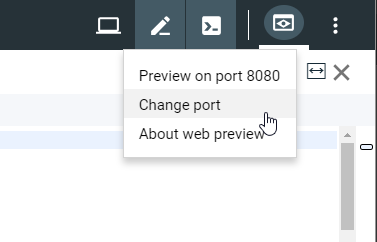
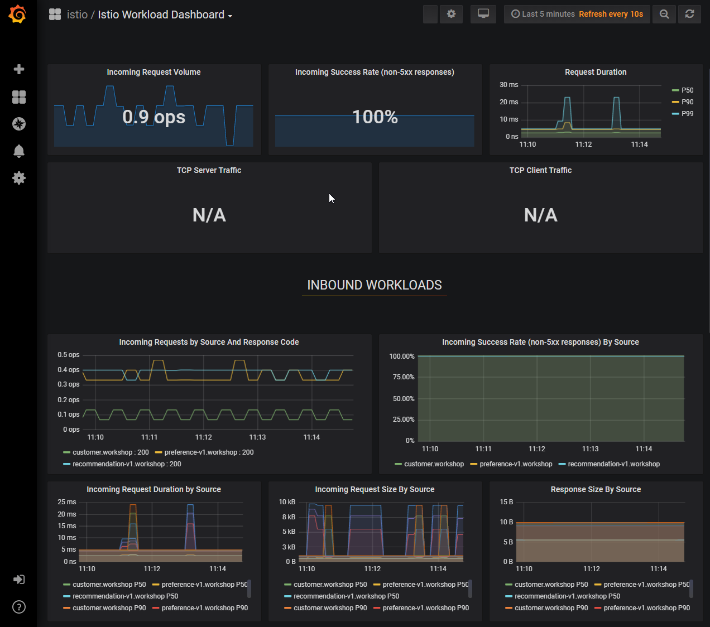

Monitoring and Tracing
|
Before Start
The various dashboards that we will see in this lab are not accessible outside the cluster (for obvious security reasons). To display them we need to use To display services running on localhost on Cloud Shell, it provides a feature called Web Preview. We will show you how to use it a little further in the document. |
Monitoring
First examine the Istio running services, and notice the presence of the following services : grafana, prometheus, jaeger-query and servicegraph.
kubectl get services -n istio-systemOutput.
NAME TYPE CLUSTER-IP EXTERNAL-IP PORT(S) AGE
grafana ClusterIP 10.3.255.100 <none> 3000/TCP 13h
...
jaeger-query ClusterIP 10.3.242.194 <none> 16686/TCP 13h
prometheus ClusterIP 10.3.247.5 <none> 9090/TCP 13h
servicegraph ClusterIP 10.3.247.56 <none> 8088/TCP 13h
...Grafana
-
Set up a tunnel to Grafana.
The Grafana service is running on port 3000. In the following command we port-forward the remote port 3000 to the local port 3000. If the local port were different, for example 8080, we would write 8080:3000.
|
kubectl -n istio-system port-forward service/grafana 3000:3000 &-
Display the Grafana dashboard
In Cloud Shell, click on Web Preview, then change the default port to 3000.


The browser will then open a new window with URL that looks like:
https://3000-dot-XXXX-dot-devshell.appspot.com/?authuser=0&orgId=1To display the Istio dashboard, replace the path of the URL by /d/1/istio-mesh-dashboard. The URL should look like:
https://3000-dot-XXXX-dot-devshell.appspot.com/d/1/istio-mesh-dashboard
# or if you are on your machine
http://localhost:3000/d/1/istio-mesh-dashboardExamine the dashboard, you should see some statistics for the requests you sent earlier.

Prometheus
As you did with Grafana, use the port-fowarding to display the Prometheus console.
Hint: start by finding the prometheus service port.
The Prometheus console should look like this.

Let’s enter a query to display the total requests sent to the recommendation service:
Enter:
istio_requests_total{destination_service="recommendation.workshop.svc.cluster.local"}select Execute, and run several requests through the system:
while true; do curl $CUSTOMER_URL; sleep .5; doneClick on the Graph to display the graph corresponding to this query.

| You may have to refresh the browser for the Prometheus graph to update. |